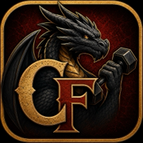

Critical Fit
Your Fitness Quest Journal
Critical Fit turns your fitness journey into a fantasy adventure. Designed to be both simple and fun. Log food and activity every day to earn experience, evolve your dragon, and master your health quest — no app store required.
How Your Quest Works
Journal
Log your daily rations (food) and activities from the Journal tab. Each logged day counts toward your dragon's evolution.
Dragon Evolution
Your dragon evolves through five stages over 60 logged days — Wyrmling, Drake, Guardian, Elder Dragon, and Ancient Dragon. Miss 15 days and it drops a level.
Life Points
Your daily caloric deficit score: Energy Used minus Calories Consumed measured per day. A score greater than 500 is represented by a burning fire because this is the goal in order to burn fat. Drop below the goal and your fire goes out.
Character Sheet
Set your height, weight, age, and activity level to calculate your personalized caloric targets. See your base energy usage (the calories you burn simply by being alive), your adjusted energy usage (given your estimated daily movement), and your daily energy consumption goal (max consumption in order to lose fat).
Progress Charts
Visualize your nutrition, macros, calories burned, and weight trends across the last 7 days (up to a full year for Guild Members).
Install the App
Critical Fit is a Progressive Web App. Tap the Install link under the menu bar in the upper left corner to install the app to your mobile home screen for a full native experience — no app store required.